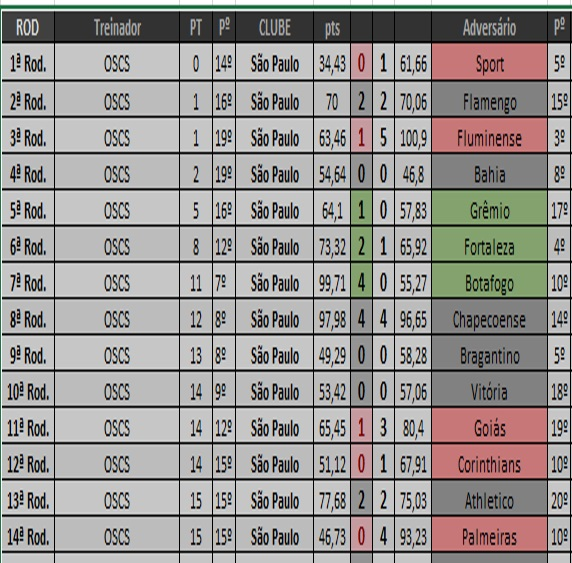

Campeonato de Cartola
A vitória no cartola é o sucesso do seu time!


Realizando antigo sonho, Odílio da Silva Cirne da Silveira, com o codinome de "OSCS", é novo técnico do Grêmio.
Desligado do São Paulo na rodada 14, direção do Grêmio tratou de cobrir todas as ofertas salariais em vista de garantir nada menos que o atual campeão da Copa do Brasil.
É bem verdade que a Copa do Brasil este ano está bem mais díficil que a dos anos anteriores, e isso se deu por decisão da liga de tranferir a Copa do Brasil da modalidade "copa de contagem simples" (liga clássica), para compor o mix de copas de clubes de cartola, fazendo com que esta competição inflasse o número de participantes, de 8 cartoleiros (sem clubes envolvidos) para 144 clubes, na primeira fase, em disputa. Até ano passado, os critérios para a participação na Copa do Brasil eram ter sido campeão das antigas copinhas "apertura", "amizade", "inverno" ou "clausura" dos dois últimos anos. A partir desta temporada, a Copa do Brasil passou a contar com todos os clubes disputantes das divisões de elite dos campeonatos estaduais. Com a medida, o nível de dificuldade aumentou barbaramente. Entretanto, a mudança não tira o mérito do OSCS pois, antes de pensar em participar, o cartoleiro, primeiramente, teria de ao menos ter conseguido ter sido campeão de alguma coisa. E nisso que se baseou o time do Grêmio OSCS: campeão da Copa Clausura 2017, Amizade 2023 e atual Campeão da Copa do Brasil, foi contratado para ajudar o Grêmio na busca de ser o primeiro clube a vencer a vencer a Copa do Brasil de Clubes, e quem sabe até mesmo se tornar a primeira agremiação da liga brasileira a levantar a Copa Sulamericana, torneio em que o clube consta como um dos 8 representantes do certame nacional.
Abaixo, desempenho do "OSCS" no nacional deste ano, treinando o são Paulo FC.
 --> VOLTAR